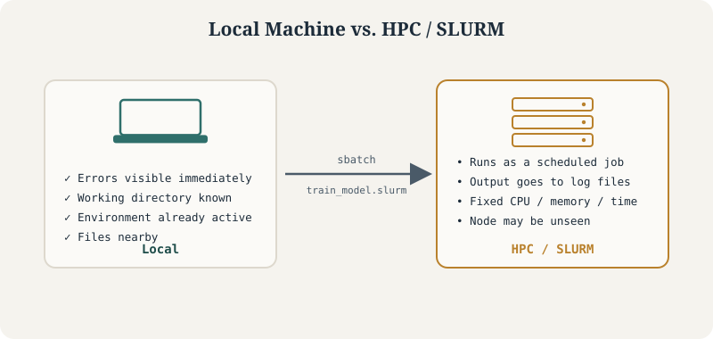

Why My Model Worked Locally but Failed on HPC
A practical guide to debugging machine learning workflows when moving from local environments to HPC systems using SLURM

The core shift this tutorial is about: on your laptop, you and the script share an environment. On HPC, the scheduler stands between you – and every assumption your script quietly relied on has to be made explicit.
SLURM HPC Debugging Python
When we develop a machine learning model on a local machine, the workflow often feels simple. We open a notebook, load a dataset, train a model, inspect the output, and save the results. Everything is visible and interactive. If something breaks, we see the error immediately.
But moving the same model to an HPC system is a different experience.
On HPC, your code does not run in the same environment, does not always start from the same directory, may not have access to the same packages, and is controlled by a scheduler. The model that worked locally is now running as a job, often without direct interaction. This is where many hidden assumptions begin to break.
The issue is usually not that the model is wrong. More often, the problem is that the local workflow was too forgiving.
1 Local Machine vs HPC
On your laptop, you are usually working interactively:
python train_model.pyYou run the script directly. Your terminal shows errors. Your current directory is obvious. Your files are nearby. Your Python environment is already active.
On HPC, you usually submit a job:
sbatch train_model.slurmAfter that, the scheduler decides when and where your code runs. Your script may run on a compute node you never directly see. The output may go into a log file. If something fails, you may only discover it later.
This means your code must become more explicit. You need to tell the system:
Where is the data?
Which environment should be loaded?
How much memory is needed?
How many CPUs should be used?
Where should the output go?
How long can the job run?This is the core difference between local development and HPC execution.
2 A Simple Local Training Script
Suppose this script works perfectly on your laptop.
# train_model.py
import pandas as pd
from sklearn.model_selection import train_test_split
from sklearn.ensemble import RandomForestClassifier
from sklearn.metrics import classification_report
import joblib
data = pd.read_csv("data/train.csv")
X = data.drop(columns=["target"])
y = data["target"]
X_train, X_test, y_train, y_test = train_test_split(
X, y,
test_size=0.2,
random_state=42,
stratify=y
)
model = RandomForestClassifier(
n_estimators=300,
random_state=42,
n_jobs=-1
)
model.fit(X_train, y_train)
pred = model.predict(X_test)
print(classification_report(y_test, pred))
joblib.dump(model, "results/random_forest_model.joblib")
This may work locally because:
data/train.csv exists
results/ already exists
your Python packages are installed
your machine allows n_jobs=-1
you are running from the expected folderOn HPC, every one of these assumptions can fail.
3 Problem 1: Relative Paths Break
This line is fragile:
data = pd.read_csv("data/train.csv")It assumes the job starts from the project directory. But on HPC, the job may run from another location depending on how it is submitted.
A safer version is:
from pathlib import Path
import pandas as pd
PROJECT_DIR = Path("/path/to/your/project")
DATA_PATH = PROJECT_DIR / "data" / "train.csv"
RESULTS_DIR = PROJECT_DIR / "results"
RESULTS_DIR.mkdir(parents=True, exist_ok=True)
print(f"Reading data from: {DATA_PATH}")
if not DATA_PATH.exists():
raise FileNotFoundError(f"Data file not found: {DATA_PATH}")
data = pd.read_csv(DATA_PATH)This makes the script more HPC-friendly because it no longer depends on where the job starts.
4 Problem 2: Output Directory Does Not Exist
Locally, you may have already created a folder called results.
On HPC, if this folder does not exist, this line fails:
joblib.dump(model, "results/random_forest_model.joblib")A safer version is:
RESULTS_DIR.mkdir(parents=True, exist_ok=True)
model_path = RESULTS_DIR / "random_forest_model.joblib"
joblib.dump(model, model_path)
print(f"Model saved to: {model_path}")Small details like this matter because HPC jobs are often non-interactive. You want the script to create what it needs or fail with a clear message.
5 Problem 3: n_jobs=-1 Can Be Dangerous on HPC
This line is common locally:
RandomForestClassifier(n_estimators=300, random_state=42, n_jobs=-1)On your laptop, n_jobs=-1 means “use all available cores.”
On HPC, this can be problematic. If you requested 4 CPUs but the node has 64 cores, some libraries may try to use more resources than allocated. This can slow your job, overload the node, or violate cluster usage rules.
A better approach is to pass the number of CPUs explicitly.
import os
n_cpus = int(os.environ.get("SLURM_CPUS_PER_TASK", 1))
model = RandomForestClassifier(
n_estimators=300,
random_state=42,
n_jobs=n_cpus
)Now your Python code respects what you requested in the SLURM script.
6 A Better HPC-Ready Python Script
Here is a more robust version of the training script.
# train_model_hpc.py
from pathlib import Path
import os
import pandas as pd
import joblib
from sklearn.model_selection import train_test_split
from sklearn.ensemble import RandomForestClassifier
from sklearn.metrics import classification_report
# -----------------------------
# Project paths
# -----------------------------
PROJECT_DIR = Path("/path/to/your/project")
DATA_PATH = PROJECT_DIR / "data" / "train.csv"
RESULTS_DIR = PROJECT_DIR / "results"
RESULTS_DIR.mkdir(parents=True, exist_ok=True)
# -----------------------------
# Basic logging
# -----------------------------
print("Starting training job")
print(f"Project directory: {PROJECT_DIR}")
print(f"Data path: {DATA_PATH}")
print(f"Results directory: {RESULTS_DIR}")
if not DATA_PATH.exists():
raise FileNotFoundError(f"Data file not found: {DATA_PATH}")
# -----------------------------
# Resource awareness
# -----------------------------
n_cpus = int(os.environ.get("SLURM_CPUS_PER_TASK", 1))
print(f"Using CPUs: {n_cpus}")
# -----------------------------
# Load data
# -----------------------------
data = pd.read_csv(DATA_PATH)
print(f"Data shape: {data.shape}")
print(f"Columns: {list(data.columns)}")
if "target" not in data.columns:
raise ValueError("Column 'target' not found in dataset.")
X = data.drop(columns=["target"])
y = data["target"]
print("Target distribution:")
print(y.value_counts(normalize=True))
# -----------------------------
# Train-test split
# -----------------------------
X_train, X_test, y_train, y_test = train_test_split(
X,
y,
test_size=0.2,
random_state=42,
stratify=y
)
# -----------------------------
# Model training
# -----------------------------
model = RandomForestClassifier(
n_estimators=300,
random_state=42,
n_jobs=n_cpus
)
print("Training model...")
model.fit(X_train, y_train)
# -----------------------------
# Evaluation
# -----------------------------
print("Evaluating model...")
pred = model.predict(X_test)
report = classification_report(y_test, pred)
print(report)
# -----------------------------
# Save outputs
# -----------------------------
model_path = RESULTS_DIR / "random_forest_model.joblib"
report_path = RESULTS_DIR / "classification_report.txt"
joblib.dump(model, model_path)
with open(report_path, "w") as f:
f.write(report)
print(f"Model saved to: {model_path}")
print(f"Report saved to: {report_path}")
print("Job completed successfully")This script is longer than the local version, but it is much safer. It checks paths, creates folders, prints progress, respects allocated CPUs, and saves logs.
Following is a basic slurm job submission script.
7 A Basic SLURM Script
Now we need a SLURM job script to run the model.
#!/bin/bash
#SBATCH --job-name=random_forest_train
#SBATCH --output=logs/random_forest_%j.out
#SBATCH --error=logs/random_forest_%j.err
#SBATCH --time=02:00:00
#SBATCH --cpus-per-task=4
#SBATCH --mem=16G
#SBATCH --partition=normal
echo "Job started"
echo "Job ID: $SLURM_JOB_ID"
echo "Running on node: $SLURMD_NODENAME"
echo "CPUs allocated: $SLURM_CPUS_PER_TASK"
echo "Working directory: $(pwd)"
mkdir -p logs
# Load your Python environment
# Example 1: Conda
source ~/.bashrc
conda activate my_ml_env
# Example 2: Module system
# module load python/3.10
python train_model_hpc.py
echo "Job finished"Save this as:
train_model.slurmSubmit it using:
sbatch train_model.slurmCheck the queue:
squeue -u $USERAfter the job finishes, inspect:
cat logs/random_forest_JOBID.out
cat logs/random_forest_JOBID.errReplace JOBID with the actual job number.
8 Real Debugging Example 1: “File Not Found”
You submit the job and see:
FileNotFoundError: Data file not found: data/train.csvThis usually means the job is not running from the directory you expected.
To debug, add this to the SLURM script:
echo "Working directory: $(pwd)"
ls -lh
ls -lh data/Or in Python:
import os
print("Current working directory:", os.getcwd())
print("Files here:", os.listdir("."))The fix is usually to use absolute paths or explicitly move to the project directory:
cd /path/to/your/project
python train_model_hpc.pyA corrected SLURM script may include:
cd /path/to/your/project
echo "Now running from: $(pwd)"
python train_model_hpc.py9 Real Debugging Example 2: “Module Not Found”
The job fails with:
ModuleNotFoundError: No module named 'sklearn'This means the environment used by the HPC job does not contain the same packages as your local environment.
Locally, your notebook may use one Python installation. The HPC job may use another.
To debug:
which python
python --version
python -c "import sklearn; print(sklearn.__version__)"Add these lines to your SLURM script before running the main code:
echo "Python path:"
which python
echo "Python version:"
python --version
echo "Checking sklearn:"
python -c "import sklearn; print(sklearn.__version__)"If this fails, your environment is not correctly activated.
A more careful SLURM script would be:
source ~/.bashrc
conda activate my_ml_env
which python
python --version
python train_model_hpc.pyThis is one of the most common HPC problems: your code is correct, but your environment is not.
10 Real Debugging Example 3: Job Was Killed Because of Memory
Sometimes the error file says:
slurmstepd: error: Detected 1 oom-kill eventThis means your job used more memory than requested.
For example, you requested:
#SBATCH --mem=4GBut your dataset and model required more.
First, increase memory reasonably:
#SBATCH --mem=32GBut also check your code. Maybe you are loading a huge file unnecessarily:
data = pd.read_csv(DATA_PATH)For very large files, consider reading only required columns:
usecols = ["feature1", "feature2", "feature3", "target"]
data = pd.read_csv(DATA_PATH, usecols=usecols)Or read in chunks:
for chunk in pd.read_csv(DATA_PATH, chunksize=100_000):
print(chunk.shape)On HPC, memory problems are not just technical failures. They tell you that the local workflow may not scale.
11 Real Debugging Example 4: Job Times Out
The error may not look dramatic. Your job may simply stop because it exceeded the time limit.
If your script has:
#SBATCH --time=00:30:00and the model needs two hours, SLURM will terminate it.
Increase the time:
#SBATCH --time=04:00:00But also add progress logging:
print("Step 1 completed: data loaded")
print("Step 2 completed: split done")
print("Step 3 started: model training")This helps you understand where time is being spent.
For long workflows, save intermediate files:
X_train.to_parquet(RESULTS_DIR / "X_train.parquet")
X_test.to_parquet(RESULTS_DIR / "X_test.parquet")That way, if the job fails during modeling, you do not need to repeat preprocessing.
12 Real Debugging Example 5: The Job Runs but Output Is Missing
This is very frustrating.
The job says completed, but there is no model file.
Possible reasons:
The output directory did not exist
The script saved files somewhere else
The job failed before saving
The file path was relative
The process had no write permissionAdd explicit save messages:
print(f"Saving model to: {model_path}")
joblib.dump(model, model_path)
if model_path.exists():
print("Model file exists after saving.")
else:
raise RuntimeError("Model file was not created.")Also check permissions:
ls -ld /path/to/your/project/resultsIf needed:
chmod u+w /path/to/your/project/results13 Real Debugging Example 6: Parallel Jobs Overwrite Each Other
Suppose you submit multiple jobs. Each job writes to:
random_forest_model.joblibThen jobs may overwrite each other.
On HPC, outputs should often include the SLURM job ID.
job_id = os.environ.get("SLURM_JOB_ID", "local")
model_path = RESULTS_DIR / f"random_forest_model_{job_id}.joblib"
report_path = RESULTS_DIR / f"classification_report_{job_id}.txt"Now each job writes a separate output.
This becomes especially important when running parameter sweeps, simulations, or repeated undersampling.
14 Running Multiple Experiments with a SLURM Array
A very common HPC pattern is to run the same script many times with different parameters.
For example, suppose you want to train models using different random seeds.
Create a Python script:
# train_with_seed.py
from pathlib import Path
import os
import argparse
import pandas as pd
import joblib
from sklearn.model_selection import train_test_split
from sklearn.ensemble import RandomForestClassifier
from sklearn.metrics import classification_report
parser = argparse.ArgumentParser()
parser.add_argument("--seed", type=int, required=True)
args = parser.parse_args()
seed = args.seed
PROJECT_DIR = Path("/path/to/your/project")
DATA_PATH = PROJECT_DIR / "data" / "train.csv"
RESULTS_DIR = PROJECT_DIR / "results" / "seed_runs"
RESULTS_DIR.mkdir(parents=True, exist_ok=True)
n_cpus = int(os.environ.get("SLURM_CPUS_PER_TASK", 1))
job_id = os.environ.get("SLURM_JOB_ID", "local")
print(f"Running seed: {seed}")
print(f"Job ID: {job_id}")
data = pd.read_csv(DATA_PATH)
X = data.drop(columns=["target"])
y = data["target"]
X_train, X_test, y_train, y_test = train_test_split(
X,
y,
test_size=0.2,
random_state=seed,
stratify=y
)
model = RandomForestClassifier(
n_estimators=300,
random_state=seed,
n_jobs=n_cpus
)
model.fit(X_train, y_train)
pred = model.predict(X_test)
report = classification_report(y_test, pred)
model_path = RESULTS_DIR / f"model_seed_{seed}_job_{job_id}.joblib"
report_path = RESULTS_DIR / f"report_seed_{seed}_job_{job_id}.txt"
joblib.dump(model, model_path)
with open(report_path, "w") as f:
f.write(report)
print(f"Saved model: {model_path}")
print(f"Saved report: {report_path}")Now create a SLURM array script:
#!/bin/bash
#SBATCH --job-name=rf_seed_array
#SBATCH --output=logs/rf_seed_%A_%a.out
#SBATCH --error=logs/rf_seed_%A_%a.err
#SBATCH --time=02:00:00
#SBATCH --cpus-per-task=4
#SBATCH --mem=16G
#SBATCH --array=1-10
mkdir -p logs
cd /path/to/your/project
source ~/.bashrc
conda activate my_ml_env
SEED=$SLURM_ARRAY_TASK_ID
echo "Running array task: $SLURM_ARRAY_TASK_ID"
echo "Using seed: $SEED"
python train_with_seed.py --seed $SEEDSubmit:
sbatch train_seed_array.slurmThis launches 10 jobs, each with a different seed.
This is where HPC becomes powerful: not just running one big model, but running many controlled experiments reproducibly.
15 A Practical Debugging Checklist Before Submitting
Before sending a full job, run a small test.
First, test the Python script locally or on the login node with a tiny dataset:
python train_model_hpc.pyThen submit a short SLURM test:
#SBATCH --time=00:10:00
#SBATCH --mem=4GUse a small sample:
data = pd.read_csv(DATA_PATH, nrows=1000)Once that works, scale up.
This saves a lot of time. It is painful to wait in a queue for hours only to discover that the job failed because a folder name was wrong.
While working with your local machine the concern is:
Does my code work?On HPC, it is:
Can my code run reproducibly, non-interactively, with explicit resources, clear logs, and safe outputs?That is a how HPC forces you to improve your workflow and write code that is more careful, more transparent, and more scalable.